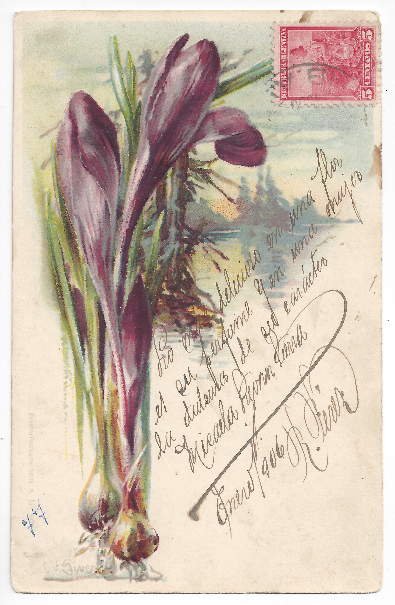
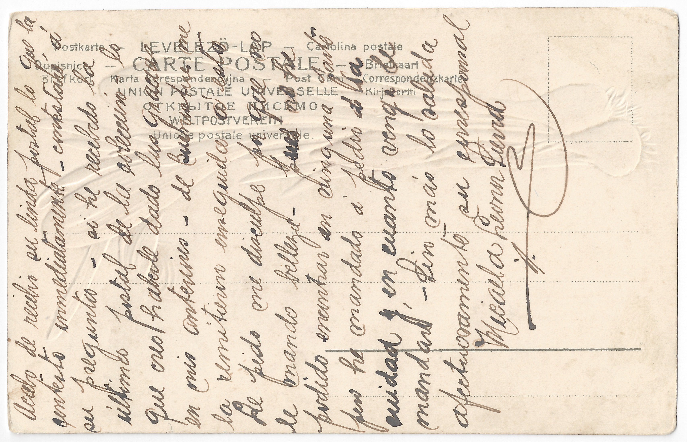

Description: Postcard to Distinguido corresponsal (1)

Lo más delicioso en una flor
es su perfume Yperfume. Y en una mujer
la dulsuradulzura de su caráctercarácter. Micaela Leoner Sierra
Enero 1906
R. Pérez
Lo más delicioso en una flor
es su perfume Yperfume. Y en una mujer
la dulsuradulzura de su caráctercarácter. Micaela Leoner Sierra
Enero 1906
R. Pérez
What is most delicious in a flower
is its perfume and in a woman
the sweetness of her character.
Micaela Leoner Sierra
January 1906
R. Pérez

Acabo de recibir su linda postal lo que lala que contesto inmediatamente – ce. Contestaré áa su pregunta – si: sí, he recibido la
última postal de la colección – lo, por la que creo haberle dado las gracias
en mis anteriores – ds. De Buenos Aires me
la remitieron enseguida áaestaesta. Le pido me disculpe por queporque no
le mando belleza – a, pues no he
podido encontrar en ninguna parte
pero he mandado áa pedir áa la
ciudad y en cuando venga le
mandaré –é. Sin más lo saluda
afectuosamente su corresponsall, Micaela Leoner Sierra
Acabo de recibir su linda postal lo que lala que contesto inmediatamente – ce. Contestaré áa su pregunta – si: sí, he recibido la
última postal de la colección – lo, por la que creo haberle dado las gracias
en mis anteriores – ds. De Buenos Aires me
la remitieron enseguida áaestaesta. Le pido me disculpe por queporque no
le mando belleza – a, pues no he
podido encontrar en ninguna parte
pero he mandado áa pedir áa la
ciudad y en cuando venga le
mandaré –é. Sin más lo saluda
afectuosamente su corresponsall, Micaela Leoner Sierra
I just received your pleasant postcard
to which I’ll reply immediately.
I’ll answer your question:
yes, I received the last postcard
of the collection, and I think
I thanked you for that in my previous
postcard. It was forwarded right away
from Buenos Aires to this address.
I beg you’ll excuse me for not sending
you beauty, but I couldn’t find
one anywhere. However, I ordered
one from the city and when it
arrives, I’ll send it to you.
Without further ado, most affectionately,
Your correspondent,
Micaela Leoner Sierra